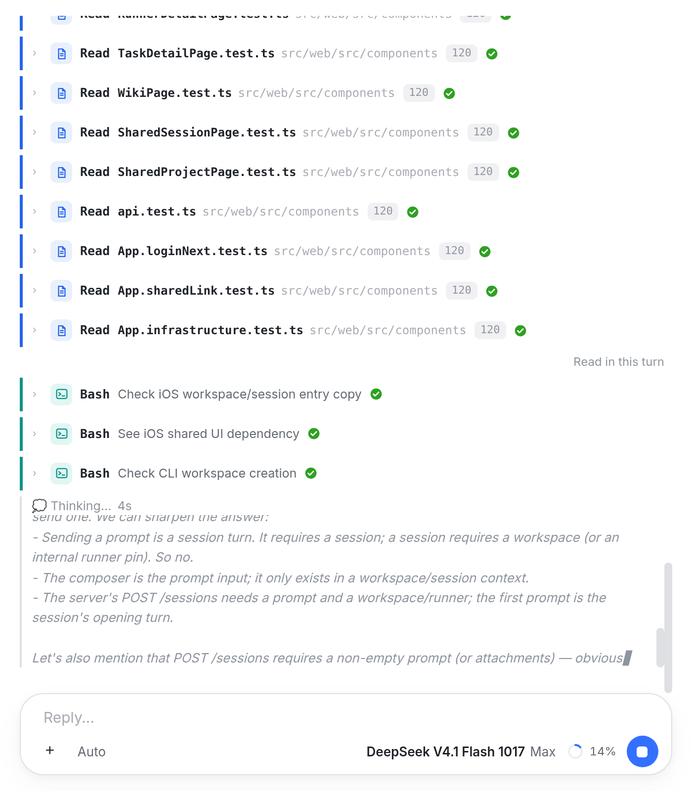
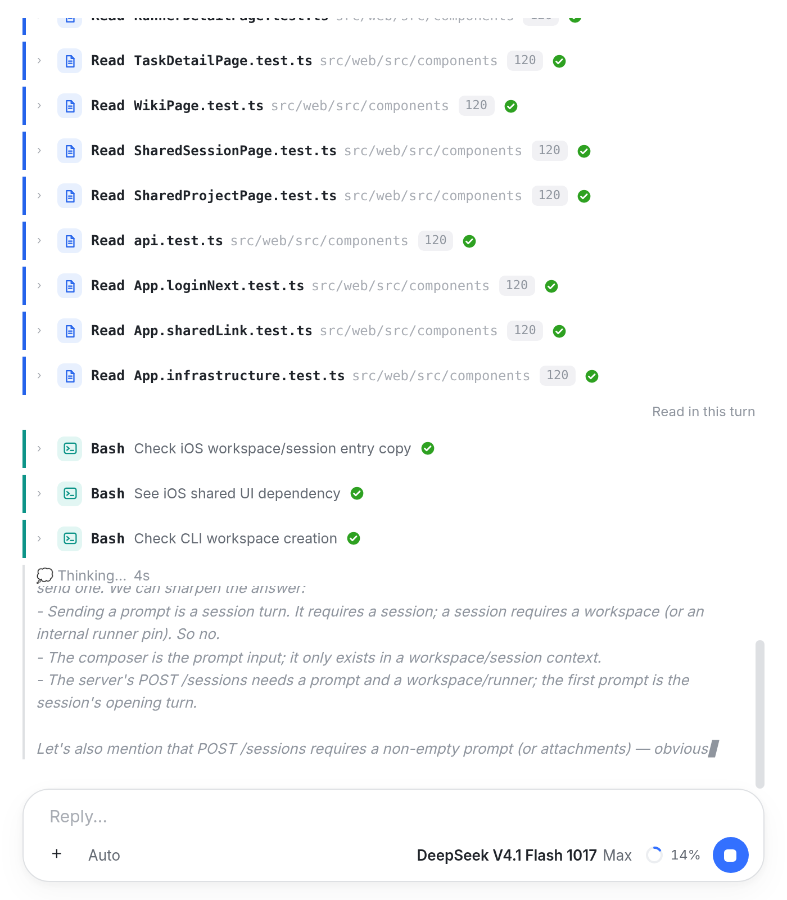
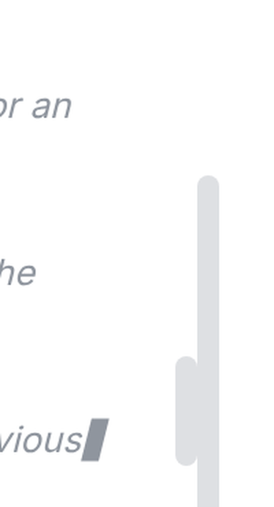
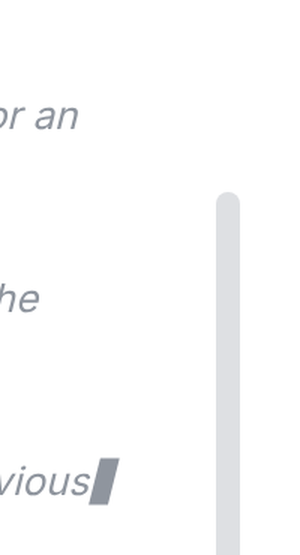

你截图里右侧并排的两条滚动条，是同一个面板里两个滚动区各自画出来的：外层是会话滚动区
.workspace-sessions；内侧那条属于直播中的思考块 .chat-think-port——它被限制成约 11em 高、自己可滚
（DeepSeek 一轮推理常有几万字，不能让它把回答和工具行挤出屏幕），于是思考块的条就贴在会话条内侧 8px 处。
两条都跟着尾部停在底部，看起来像「右边有两条」。
修改：让思考块继续可滚，但不画自己的滚动条。外层会话条不动；思考块原来的 8px 条槽用 8px 内边距补回
（padding-right: 8px → 16px），所以文字宽度、换行都不变，唯一的区别是少一条条。

① 两条并排。外侧是会话滚动条（.workspace-sessions）；它内侧 8px 是思考块自己的滚动条
（.chat-think-port，11em 高的视口）。两条都在底部，短的只覆盖思考块那一段。

✓ 只剩一条。思考块照常可以用滚轮 / 触控板在块内回看，滚回底部恢复自动跟随；只是不再画自己的滚动条。 文字位置与修改前一致（原来的条槽由内边距补回）。

两条并排现状 ① 左边短线是思考块的滚动条，右边长线是会话的滚动条；两条之间只隔 8px。

一条修改后 ✓ 只剩会话条。思考块内仍是可滚动的 11em 视口，只是不画条。
max-height: 11em; overflow-y: auto）。两个滚动区都使用全局的 8px 滚动条样式，所以并排。overscroll-behavior: contain 保持现状，滚到头不会带动外层会话。src/web/src/index.css 一处；组件逻辑、服务端、原生客户端（iOS / macOS / Android）都不动。/* src/web/src/index.css — .chat-think-port */ padding-right: 16px; /* was 8px + the scrollbar's own 8px gutter */ scrollbar-width: none; .chat-think-port::-webkit-scrollbar { display: none; }
图的来源：面板按控制台的真实结构和 index.css 重绘（会话行、思考块、输入框都是真实类名），
内容取自你截图里的那一轮；两条滚动条由 Chromium 实际绘制，不是画的。改后的规则已落在
index.css；改前那一栏在面板里还原了旧规则用于对照，两张图用的是同一份样式表。